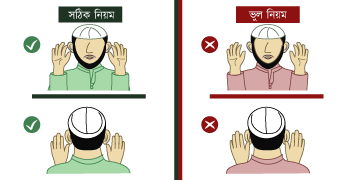
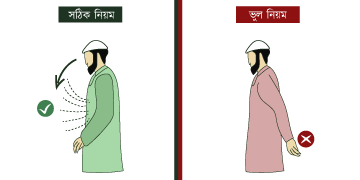
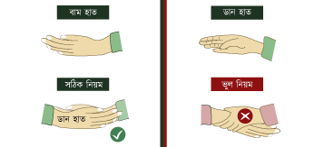
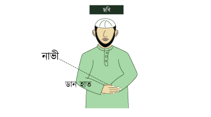

তাকবীরে তাহরিমা বা "আল্লাহু আকবার" বলে নামাজ শুরু করার নিয়ম
কেবলামুখী হয়ে দাঁড়িয়ে মনে মনে নামাজের নিয়্যত করবে। নিয়্যত মুখে মুখে উচ্চারণ জরুরি নয়, তবে কোন ওয়াক্তের কোন নামাজ পড়বে, তার ধ্যান মনে মনে থাকা ফরয।
তাকবীর বলার সময় দুই হাত কান বরাবর এমনভাবে উঠাতে হবে যেন উভয় হাতের তালু কিবলামুখী হয়। আঙুলগুলির মাথা কিবলামুখী হবে এবং স্বাভাবিক ফাঁক থাকবে। অর্থাৎ বৃদ্ধাঙ্গুলি কানের সাথে একেবারে মিলে যাবে বা বরাবর হবে এবং বাকি আঙ্গুলগুলো উপরের দিকে থাকবে।

কান থেকে হাত নামিয়ে সোজা হাত বেঁধে ফেলবে। নিচে ছেড়ে দিবে না বা পিছন দিকে ঝাড়া দিবে না।

তাকবীর বলা শেষে দুই হাত বাঁধতে হবে। ডান হাতের বৃদ্ধাঙ্গুলি এবং কনিষ্ঠাঙ্গুলি দ্বারা নিচের ছবির মতো করে বাম হাতের কবজি ধরবে। অতঃপর ডান হাতের মাঝখানের তিন আঙুল বাম হাতের বাহুর উপরে সোজাভাবে বিছিয়ে রাখবে।

উভয়হাত নাভির কিছুটা নিচে পেটের উপর চেপে ধরবে এবং উপরোক্ত নিয়মে হাত বাঁধবে।
